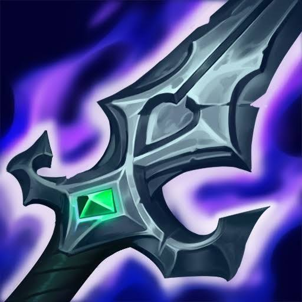
O ITEM MAIS IMPORTANTE PARA A BRIAR, literalmente indispensável, matematicamente feito para a Briar, já que quanto mais vida, mais dano ele dá, e isso combina perfeitamente com o W dela, que dá dano quando o inimigo tem menos vida, além dos status perfeitos que o item dá: dano, velocidade de ataque e cura. Literalmente tudo que ela precisa. Independentemente da build, esse item SEMPRE vai estar com ela.
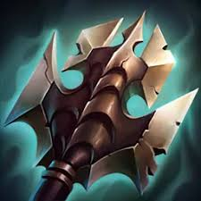
Esse item é muito bom, os status dele são perfeitos para a Briar, já que ele também faz ela dar mais dano quanto mais vida tiver, e seu reset de ataque ajuda bastante no seu dano explosivo, combinando com a runa. Fora que dá para usar antes da mordida para a mordida dar ainda mais dano.
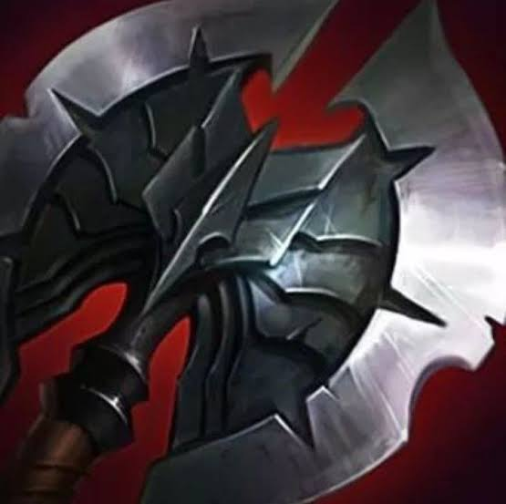
Outro item que combina muito bem com ela, já que, com a passiva, ela precisa de apenas um ataque para aplicar toda a redução de armadura, pois cada dano do sangramento aplica a passiva do item. Além dos status também serem tudo de bom para a Briar, é um item muito bom e seguro.
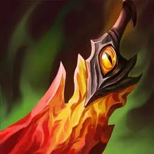
Você geralmente faz esse item como quarto item e, quando feito, ele te torna imortal. Pode avançar nos inimigos tranquilamente, já que, se matar o inimigo, você será curado. É muito bom fazer quando tem um assassino no time inimigo, já que esse item reduz MUITO o dano explosivo.
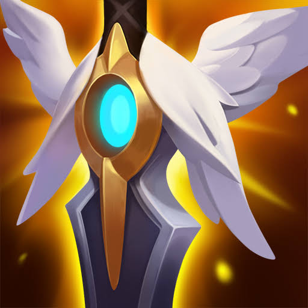
Esse item tem um segredo com a campeã: ele faz ressurgir com metade da vida, mas, com o sangramento dela, você pode se curar enquanto revive, podendo ficar com a vida cheia ao reviver. Recomendo fazer esse item quando já estiver muito forte. É um item muito bom e te deixa com mais segurança.
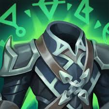
ITEM MARAVILHOSO PARA A BRIAR, mas, infelizmente, não é sempre que se deve fazer, já que vale a pena fazer quando tem muito dano AP no time inimigo, pois ele dá resistência mágica e muito aumento de cura. Mesmo com essa passiva de cura sendo muito boa, não vale a pena gastar dinheiro com seus status.
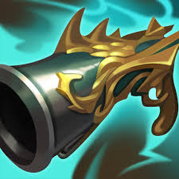
Esse item é feito para te deixar mais forte, podendo executar os inimigos. Seus status são muito bons, mas tem que ter confiança para fazer, já que, com ele, você tem que garantir kills.
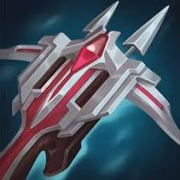
Esse item é muito quebrado, uma ótima alternativa para o Cutelo, sendo até mesmo mais forte. Mas esse item te deixa muito papel. Seu dano com esse item faz você derreter tanques. É muito forte para a Briar crítico, não dando chance para o inimigo reagir.
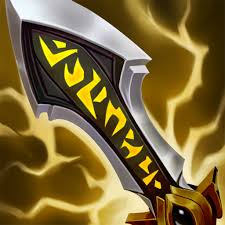
Não tem muito o que falar desse item, ele faz seus críticos darem MUITO mais dano. Com a build crítica, seu boneco vira outro, já que seu dano já era explosivo e, com esse item, fica simplesmente ridículo. Item muito poderoso e completamente bugado.
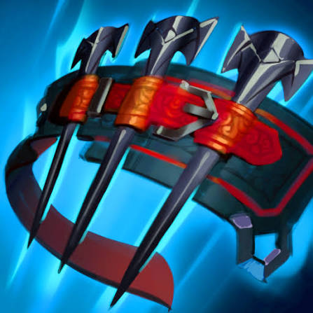
Esse item faz com que o dano, quando ulta, te dê muito dano verdadeiro. Geralmente, é um item que se faz no final da build de crítico apenas para completar os 100% de crítico. É um item bom, mas tem melhores, já que é muito dependente de acertar a ult para funcionar totalmente.
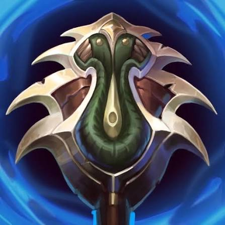
Eu amo esse item, mas ele atualmente tá bem fraquinho. É muito bom o dano que ele dá, e sua batida é muito satisfatória. Ainda dá para fazer esse item, mas é melhor esperar um buff no item para aí sim ficar perfeito de se usar.
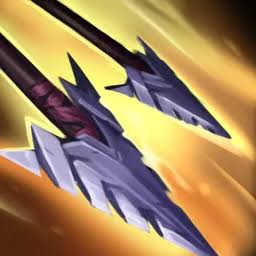
Este item seria o melhor item para a Briar se não fosse um item de ADC. Seus status são perfeitos para ela, sendo até mais forte que o Rei Destruído. Mas, mesmo sendo tão forte, ele te deixa muito papel. Seu dano é ridiculamente alto, mas é uma pena ele não se encaixar perfeitamente para a Briar.
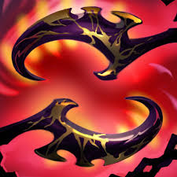
Fome Eterna, hipoteticamente, é muito, muito bom, mas, pessoalmente, eu não sou muito fã desse item. Admito que ele é muito forte e pode se encaixar em diversas builds, mas ele é bom, te dando muito vampirismo quando mata alguém. Item forte, mas não recomendo.
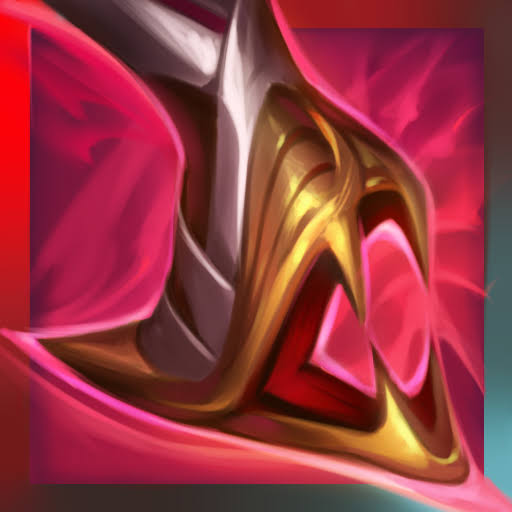
Aqui não tem muito o que dizer. Todas as botas são muito boas para a Briar. Faça qualquer uma dependendo da partida, mas lembre-se de fazer a de MR caso tenha muito stun, e não por resistência mágica. (OBS.: Não faça a bota de perfuração mágica, a única bota ruim para ela.)